具身智能仿真平台全景调研
按"入门 → 进阶 → 精通"三档梳理 19 个平台 / 数据集的底层引擎、任务、机器人、用途、数据集，标注每个平台的模仿学习 / RL 适配性与 Apple Silicon Mac 可跑性（依据官方 README、安装文档与 GitHub Issue 逐条核实）。
30 秒结论
✅ Mac 上真正能跑的核心
MuJoCo 全家桶：Meta-World、robosuite、robomimic、LIBERO、HumanoidBench、D4RL（Gymnasium-Robotics 版），外加 Genesis（官方支持 Metal/Apple Silicon）、ManiSkill3（CPU 单环境）、Habitat（带窗模式）。代价：无 GPU 并行，只能 CPU 单/少环境。
⚠️ 纯数据可在 Mac 分析
Open X-Embodiment、AgiBot World 是真机数据集（非仿真器），Mac 上可以下载、读取、可视化、做轻量微调实验；但完整训练管线（GO-1 / RT-X 类）需要 CUDA。
❌ Mac 完全没戏
Isaac Lab、OmniGibson、GRUtopia、RoboTwin 全线依赖 NVIDIA RTX + CUDA（官方仅列 Ubuntu/Windows）；RLBench 的 PyRep 官方声明仅支持 Linux。这些必须走 Linux 服务器或云 GPU。
Mac 可跑性 × 用途矩阵
一页看全：绿点 = Mac 可跑，黄点 = 有条件，红点 = 不可行。模仿 = 适合模仿学习（有演示数据 / 行为克隆管线）；RL = 在线强化学习训练友好。
| 平台 | 底层引擎 | Mac 可跑性 | 模仿学习 | RL | 数据集 | 一句话定位 |
|---|---|---|---|---|---|---|
| Meta-World | MuJoCo | ✅ 官方测试 macOS | — | ●●● 元/多任务 RL 标配 | 无（程序化任务分布） | 50 任务元 RL 基准 |
| robosuite | MuJoCo | ✅ 官方支持（viewer 需 mjpython） | ●●●（配 robomimic） | ●●● | 无自带（配 robomimic） | 模块化操作框架，机器人最多 |
| robomimic | MuJoCo | ✅ 随 robosuite | ●●● 离线 IL 横评 | ● 离线 RL | PH/MH/MG 人机演示 HDF5 | 模仿学习算法基准库 |
| D4RL / Franka Kitchen | MuJoCo | ⚠️ 用 Gymnasium-Robotics 版可跑；旧 mujoco-py 版在 ARM 未确认 | — | ●●● 离线 RL 标配 | kitchen 数据集（人类演示） | 离线 RL 经典数据集 |
| Isaac Lab / IsaacBench | Isaac Sim（PhysX+RTX） | ❌ 仅 Ubuntu/Win11 + RTX | ●●●（Mimic） | ●●● GPU 千级并行 | 无内置（Mimic/GR00T 生成） | NVIDIA 生态 GPU 并行首选 |
| ManiSkill 2/3 | SAPIEN | ⚠️ CPU Sim ✅ / GPU Sim ❌（官方矩阵） | ●●● | ●●●（GPU 并行在 Mac 不可用） | 官方演示数据集 | 任务族最丰富的开源基准之一 |
| RLBench | CoppeliaSim + PyRep | ❌ PyRep 官方仅支持 Linux | ●●●（PerAct 系标配） | ● | 脚本化无限演示 | 100 任务语言条件操作 |
| LIBERO | robosuite / MuJoCo | ✅ 与 robosuite 同栈 | ●●● VLA 评测事实标准 | ● | 130 任务 × 50 条人类演示（≈40GB） | 终身学习 + VLA 论文标配 |
| Habitat 2.0/3.0 | habitat-sim 自研 + Bullet | ⚠️ 有 macOS-arm64 包，但 headless/EGL 不支持，带窗低帧率 | — | ●● 导航 RL | HM3D / ReplicaCAD / YCB / MP3D | 室内导航/重排/人机协作首选 |
| ALFRED | AI2-THOR（Unity） | ⚠️ macOS 有据但 Unity 播放器为 x86，Apple Silicon 需 Rosetta 未官方确认 | ●●● 语言条件长程 IL | —（离散动作） | 8055 条专家演示 / 120 场景 | 语言→家务长程任务 |
| OmniGibson / BEHAVIOR-1K | Isaac Sim / Omniverse | ❌ 仅 Ubuntu/Win + RTX 2070+ | ●● | ●● | BEHAVIOR-1K（>30GB，需签协议） | 最逼真的家居长程仿真 |
| Genesis | 自研多物理引擎（支持 Metal） | ✅ 官方支持 Apple Silicon（有 render_on_macos.py 示例） | ● | ●●●（Mac 无 CUDA 并行加成） | 无自带数据集 | 新生代跨平台仿真，Mac 原生希望 |
| Open X-Embodiment | 真机数据集（RLDS） | ⚠️ 数据可下可读；TFDS 在 ARM 需 tensorflow-macos | ●●● 预训练 | — | 1M+ 轨迹 / 22 种本体 / 160k 任务 | 跨本体 VLA 预训练数据池 |
| RoboVerse (MetaSim) | 多后端（MuJoCo/SAPIEN/Isaac/Genesis/PyBullet…） | ⚠️ 仅 MuJoCo/PyBullet 后端理论可行（未确认） | ●●● | ●●● | 集成 LIBERO/ManiSkill/RoboTwin 等 | 跨仿真器统一层 + 域随机化 |
| GRUtopia | Isaac Sim 4.2 | ❌ 仅 Ubuntu + RTX | ● | ●● | GRScenes-100（需签协议） | 城市场景人形具身智能 |
| RoboGen | PyBullet + LLM 自动生成 | ⚠️ PyBullet 跨平台，但 OMPL 依赖安装复杂，未确认 | ●（生成演示） | ●●（自动出 reward） | 生成式（无固定大数据集） | LLM 自动生成任务+奖励 |
| AgiBot World | 真机数据集（LeRobot 格式） | ⚠️ 可读取/可视化；训练 GO-1 需 CUDA 12.4 | ●●● 真机预训练 | — | 约 100 万条真机轨迹 / 217 任务 / 106 场景 | 全球最大级开源真机操作数据集 |
| HumanoidBench | MuJoCo（+MJX） | ✅ 纯 Python + mujoco（无 CUDA 依赖） | — | ●●● 全身分层 RL | 无自带（含 RL 基线） | 人形全身控制 27 任务基准 |
| RoboTwin | SAPIEN + cuRobo | ❌ LeRobot 官方要求 Linux + NVIDIA GPU | ●●● 双臂数据生成 | ● | 统一格式 >10 万双臂轨迹（79.6GB） | 双臂协作 VLA 评测新贵 |
Meta-World
MuJoCo✅ Mac 可跑- 基于
- MuJoCo，Farama Foundation 维护，Gymnasium 接口
- 任务
- 50 个桌面操作任务（reach/pick-place/door/open/dial 等），MT1 / MT10 / MT50 / ML1-45 协议
- 机器人
- Sawyer 单臂（固定）
- 用途
- 多任务学习与元强化学习（Meta-RL）的事实标准基准
- 数据集
- 无自带数据集 —— 任务分布程序化生成，供在线 RL 采样
robosuite
MuJoCo✅ Mac 可跑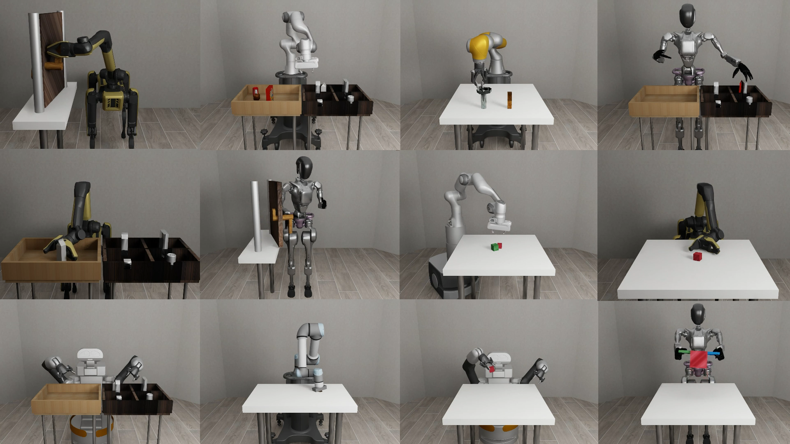
- 基于
- MuJoCo，ARISE Initiative（Stanford/UT Austin）出品的模块化框架
- 任务
- Lift / Stack / NutAssembly / Door / PickPlace / TwoArmHandover 等可自由组合的模块化任务
- 机器人
- Panda、UR5e、Sawyer、IIWA、Jaco、Kinova3、GR1 人形 —— 支持机器人种类最多的 MuJoCo 框架
- 用途
- 操作 RL / 模仿学习环境底座、遥操作数据采集、MJCF↔USD 转换
- 数据集
- 无自带，与 robomimic 数据管线配套使用
RoboMimic
MuJoCo✅ Mac 可跑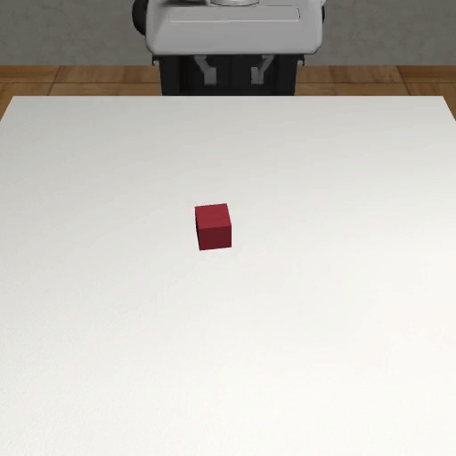
- 基于
- MuJoCo / robosuite，ARISE Initiative 的离线模仿学习框架
- 任务
- 5 个操作任务（Lift / Can / Square / Transport / Tool Hang）+ 3 个真机任务
- 机器人
- Franka Panda 为主（兼容 robosuite 全系）
- 用途
- 模仿学习算法横评基准：BC / BC-RNN / IQL / CQL / sac 等统一实现，论文复现友好
- 数据集
- PH（熟练人类）200 条/任务、MH（多人类）300 条/任务、MG（机器生成），HDF5 格式
D4RL / Franka Kitchen
MuJoCo⚠️ 用新版可跑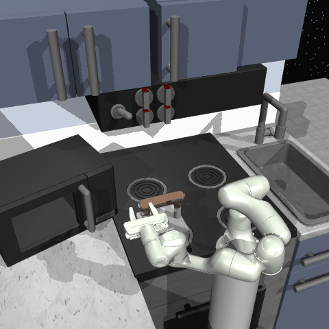
- 基于
- MuJoCo；原版 d4rl 包依赖过时的 mujoco-py（ARM64 存疑），推荐 Gymnasium-Robotics 的 Franka Kitchen 实现
- 任务
- 厨房场景 7 个目标子任务：微波炉、水壶、灯开关、柜门、灶台等组合
- 机器人
- 9-DoF Franka 移动操作臂
- 用途
- 离线强化学习经典基准（CQL/IQL/Decision Transformer 论文标配）
- 数据集
- kitchen-complete / partial / mixed-v0，约 566 条人类演示
Isaac Lab / IsaacBench
Isaac Sim❌ Mac 不可行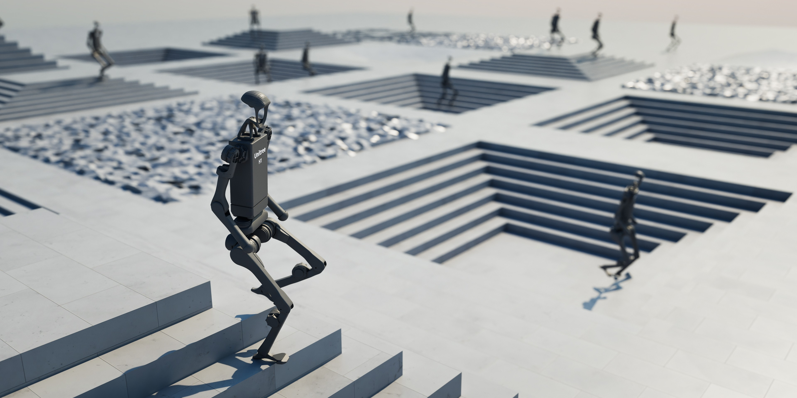
- 基于
- NVIDIA Isaac Sim（PhysX + OpenUSD + RTX 光追），GPU 千级并行环境
- 任务
- 数千并行环境的操作/运动任务 + IsaacBench 闭环评测环境
- 机器人
- H1 / G1 人形、ANYmal 四足、Franka、GR1
- 用途
- GPU 大规模并行 RL、合成数据生成、VLA 评测（NVIDIA 生态核心）
- 数据集
- 无内置；靠 Mimic / GR00T 管线生成
ManiSkill 2/3
SAPIEN⚠️ Mac 仅 CPU 模式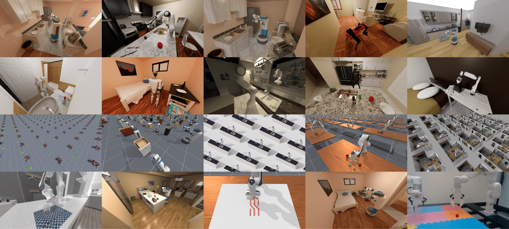
- 基于
- SAPIEN 3 物理引擎（UCSD 出品），支持 GPU 并行与光追渲染
- 任务
- 数十个任务族：桌面操作、灵巧手、人形、移动操作、绘画等
- 机器人
- Panda、Fetch、WidowX、ANYmal、Unitree Go2 等
- 用途
- GPU 并行 RL/IL、sim2real、操作通用基准
- 数据集
- 官方提供各任务演示数据集（可下）
RLBench
CoppeliaSim❌ Mac 不可行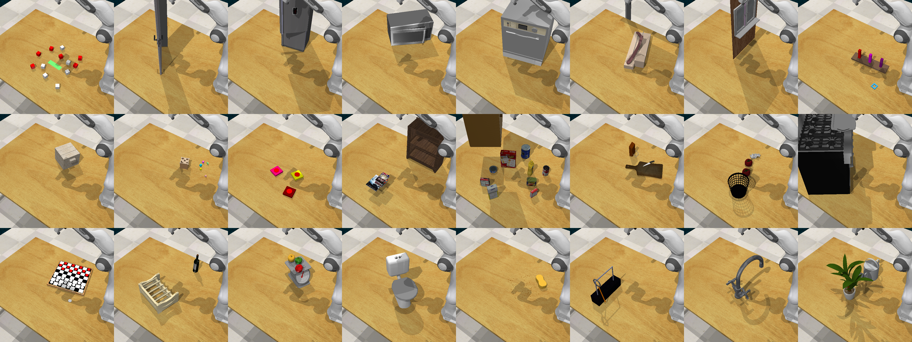
- 基于
- CoppeliaSim（原 V-REP）+ PyRep Python 桥接
- 任务
- 100 个操作任务，每任务 10–60 个随机变体（倒茶、开抽屉、插积木…）
- 机器人
- Franka Panda（PyRep 另支持 Mico/Jaco/Sawyer/UR5）
- 用途
- 多任务模仿学习、few-shot、语言条件操作（PerAct/RVT 系论文标配）
- 数据集
- 脚本化路径点 → 可生成无限专家演示（MPP 方法）
LIBERO
MuJoCo✅ Mac 可跑
- 基于
- robosuite / MuJoCo，UT Austin 终身学习组出品
- 任务
- 130 任务 / 5 套件：Spatial / Object / Goal / Long（各 10）+ LIBERO-90
- 机器人
- Franka Emika Panda（桌面场景）
- 用途
- 终身/持续学习基准；如今是 VLA 微调评测的事实标准（OpenVLA / Octo / π0 / DP / ACT 都报 LIBERO 成绩）
- 数据集
- 每任务 50 条人类遥操作演示，共约 6.5 万条 / 40GB HDF5（HF: yifengzhu-hf/LIBERO-datasets，另有 RLDS 版）
Habitat 2.0 / 3.0
habitat-sim⚠️ Mac 带窗可跑- 基于
- habitat-sim 自研引擎 + Bullet（Meta 出品），面向室内大规模场景
- 任务
- 点目标/物体目标导航、交互式重排（2.0）、人-机器人社交导航协作（3.0）
- 机器人
- Fetch 移动操作臂；3.0 加入人形化身与人机协作
- 用途
- 具身导航、重排、具身问答 —— 导航 RL 事实标准
- 数据集
- HM3D、ReplicaCAD、YCB、MP3D、Gibson 大规模扫描场景
ALFRED
AI2-THOR⚠️ Apple Silicon 未官方确认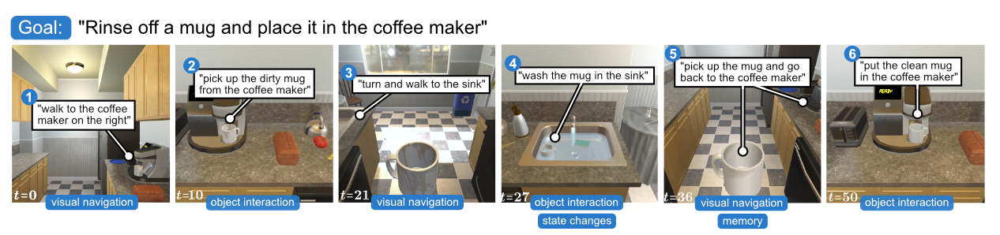
- 基于
- AI2-THOR（Unity3D 渲染，AI2 出品）
- 任务
- 7 类家务长程任务（加热食物、收纳、清洁…），语言指令 → 子目标序列
- 机器人
- AI2-THOR 离散动作智能体（非连续控制机械臂）
- 用途
- 语言条件长程模仿学习基准（LLM+具身任务分解研究常用）
- 数据集
- ALFRED：8055 条专家演示 / 120 个场景
OmniGibson / BEHAVIOR-1K
Isaac Sim❌ Mac 不可行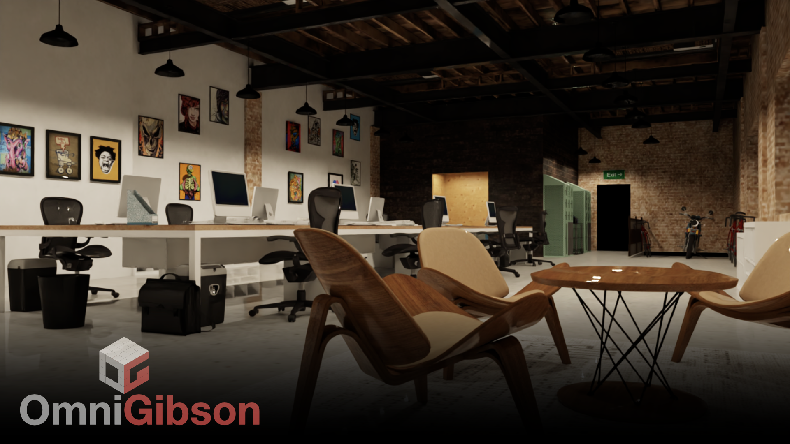
- 基于
- NVIDIA Omniverse / Isaac Sim（PhysX + RTX），Stanford 出品，保真度最高一档
- 任务
- 1000+ 种日常活动（BDDL 描述），挑战赛 50 任务
- 机器人
- Fetch、Tiago、R1 Pro、人形
- 用途
- 高保真家居长程操作/导航、sim2real
- 数据集
- BEHAVIOR-1K 数据集（>30GB，需签协议下载）
Genesis
自研多引擎✅ Mac 原生可跑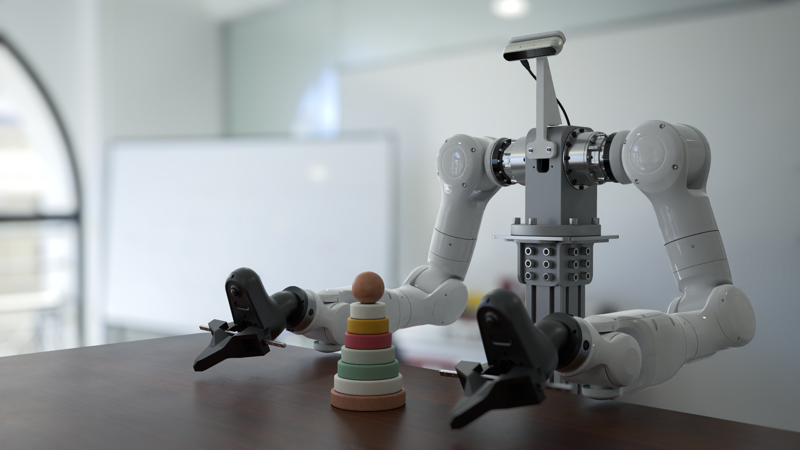
- 基于
- 自研统一物理引擎（多求解器），编译后端支持 CUDA / ROCm / Metal / Vulkan / ARM64
- 任务
- 无固定基准 —— 以示例场景为主（刚体/软体/流体/机器人操作）
- 机器人
- Franka、Unitree 等，直接加载 MJCF/URDF
- 用途
- 通用多物理仿真、大规模并行数据生成、可微仿真探索（新生代，2024 底开源爆红）
- 数据集
- 无自带数据集
Open X-Embodiment
真机数据集⚠️ 可下可读，训练需算力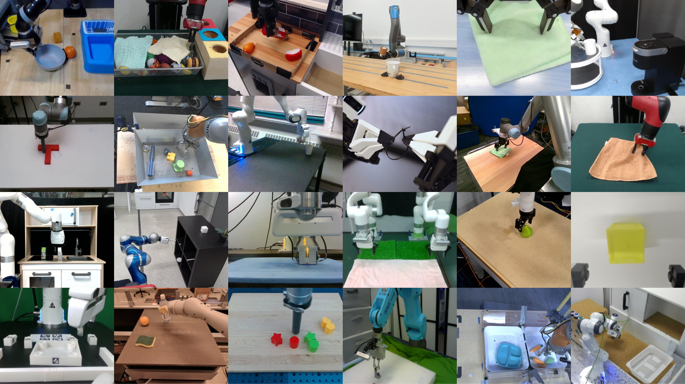
- 基于
- 非仿真器 —— Google/DeepMind 联合 34 个实验室聚合的真机数据集（RLDS 格式）
- 任务
- 100 万+ 真机轨迹、22 种机器人本体、527 技能、16 万任务（图中"25 款"口径偏大，官方为 22 种本体）
- 机器人
- Franka、UR5、WidowX、xArm、Sawyer、Kuka、双臂、四足……
- 用途
- 跨本体通用策略预训练（RT-X / Octo / OpenVLA 的训练数据池）
- 数据集
- OXE 本身（TFDS / RLDS 格式，可直接流式读取）
RoboVerse (MetaSim)
多后端统一⚠️ Mac 仅 MuJoCo/PyBullet 后端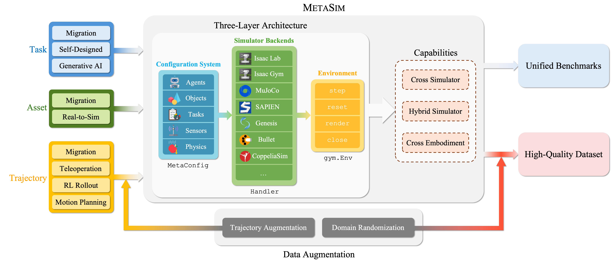
- 基于
- 统一层 + 多后端：Isaac Sim / IsaacGym / MuJoCo / SAPIEN / Genesis / PyBullet / Newton 可切换
- 任务
- 直接集成 LIBERO、ManiSkill、RoboTwin、Meta-World、robosuite、HumanoidBench 等主流基准
- 机器人
- Franka 等（content pack 提供）
- 用途
- 跨仿真器迁移、真物交互、域随机化数据生成（MetaSim 思路）
- 数据集
- 自带数据集 + 上述全部基准的演示数据
GRUtopia
Isaac Sim❌ Mac 不可行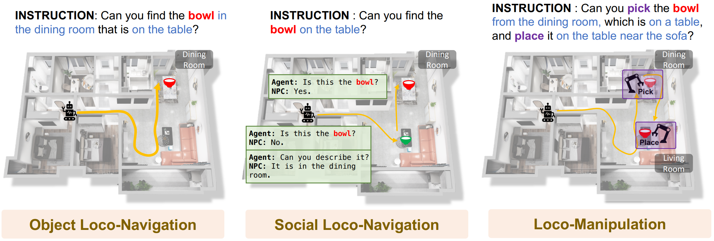
- 基于
- Isaac Sim 4.2（Omniverse），上海 AI Lab / OpenRobotLab 出品（现已更名 InternUtopia）
- 任务
- 城市场景 GRScenes-100 中的导航、操作、NPC 对话任务
- 机器人
- Unitree H1 人形等
- 用途
- 大规模城市场景具身智能 + LLM 智能体集成
- 数据集
- GRScenes-100 场景库（需签协议）
RoboGen
PyBullet + LLM⚠️ 未获官方确认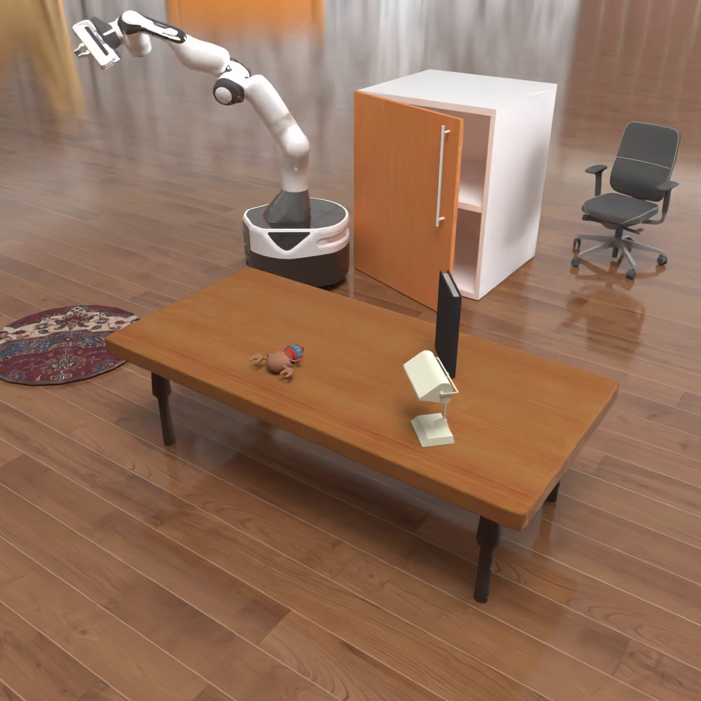
- 基于
- PyBullet + OMPL + GPT-4（CMU 出品；衍生版可接 Genesis/SAPIEN）
- 任务
- 无固定任务 —— LLM 自动提议任务 → 生成场景 → 自动写 reward → RL 训练的闭环流水线
- 机器人
- Franka 等机械臂 + 四足/运动体
- 用途
- 程序化生成任务与技能数据，探索"自动造数据"
- 数据集
- 生成式（无公开固定大数据集）
AgiBot World
真机数据集⚠️ 可读可分析，训练需 CUDA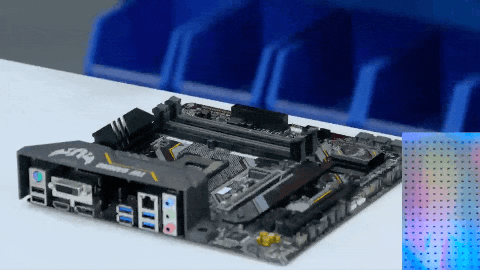
- 基于
- 非仿真器 —— 智元机器人开源的真机采集数据集（LeRobot 格式，CC BY-NC-SA 4.0）
- 任务
- Beta 版约 100 万条真机轨迹 / 2976 小时 / 217 任务 / 87 技能 / 106 场景（Alpha 版 9.2 万条）
- 机器人
- AgiBot G1 移动双臂（100+ 台同构真机采集）
- 用途
- 真机 VLA 预训练（GO-1 模型的训练数据）
- 数据集
- AgiBotWorld-Alpha / Beta（HuggingFace 可下）
HumanoidBench
MuJoCo✅ Mac 可跑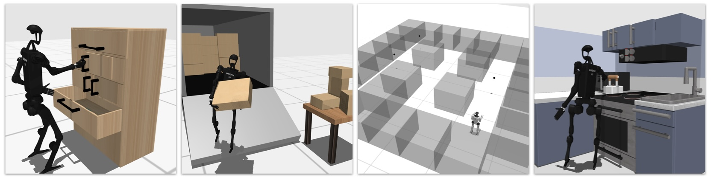
- 基于
- MuJoCo（+MJX 加速底层的运动技能），Carlo D'Eramo 组出品
- 任务
- 27 个任务：15 个全身操作（搬箱子、开门）+ 12 个运动（走路、爬楼梯、过障碍）
- 机器人
- Unitree H1 + 双 Shadow Hand（61 维动作 / 101 DoF），另提供 G1、Digit、Robotiq 选项
- 用途
- 人形全身控制、分层 RL（底层技能 + 高层操作）
- 数据集
- 无自带数据集（内置分层 RL 基线）
RoboTwin
SAPIEN❌ Mac 不可行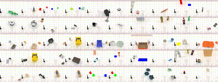
- 基于
- SAPIEN（注意：不是 Isaac Sim）+ cuRobo + pytorch3d；CVPR 2025 Highlight
- 任务
- 2.0 版：50 个双臂协作任务 × 5 种本体，RoboTwin-OD 含 731 物体/147 类，5 维域随机化
- 机器人
- Aloha-AgileX 双臂（14 DoF）等 5 种构型
- 用途
- 双臂数据生成 + VLA 评测（π0、RDT 等双臂成绩多在此报）
- 数据集
- lerobot/robotwin_unified：>10 万条统一格式轨迹（79.6GB，Apache-2.0）
生态工具速览（原图底部 5 件套）
这些不是仿真器，而是让各平台"互通"的胶水 —— 决定了你的数据能不能跨平台流动。
Isaac Sim 内置 MJCF-to-USD，robosuite 也提供 MJCF↔USD 转换 —— 把 MuJoCo 模型带进 Isaac/Genesis 生态的必经之路。
RLDS 是 Open X-Embodiment 的标准格式；LeRobot 是 HuggingFace 生态格式（ManiSkill/RoboTwin/AgiBot World 都有转换版）——选数据集时先看格式。
把真实物体扫描/建模转成 URDF，放进任意 MuJoCo/SAPIen 系仿真器。
统一多引擎接口 + 兼容主流基准 + 三大平台互操作，一个 API 跑多个后端。
SIMPLER（VLA 等构真机评测）：用仿真近似还原真机评测协议，在 Mac 可跑的 MuJoCo 栈上即可对 VLA 做低成本评测。
给你的选型建议（Apple Silicon Mac + 机器人操作研究）
🟢 在 Mac 上今天就装这些
主线：robosuite + robomimic + LIBERO（一套 pip 全搞定，官方支持 macOS）。模仿学习入门跑 robomimic 的 BC/BC-RNN 基线，然后下 LIBERO 数据集复现 VLA 微调；RL 侧用 Meta-World + HumanoidBench；想尝鲜新引擎装 Genesis。注意 viewer 用 mjpython 启动。
🔵 上 Linux 服务器 / 云 GPU 再碰这些
ManiSkill3 GPU 并行、Isaac Lab、RoboTwin（双臂 VLA）、RLBench（PerAct 系）、OmniGibson、GRUtopia。Mac 当 SSH/可视化终端，训练放远端 —— 这是当前 GPU 并行生态的现实分工。
🟡 模仿学习 vs RL 怎么选
模仿学习路线（有演示数据就能学）：robomimic → LIBERO → RoboTwin / AgiBot World / OXE 预训练。Mac 可完成前两步。
RL 路线（需要在线交互+高吞吐）：Meta-World / ManiSkill / Isaac Lab / HumanoidBench —— 除 Meta-World 外基本都需要 GPU 并行，Mac 只适合调试小环境。